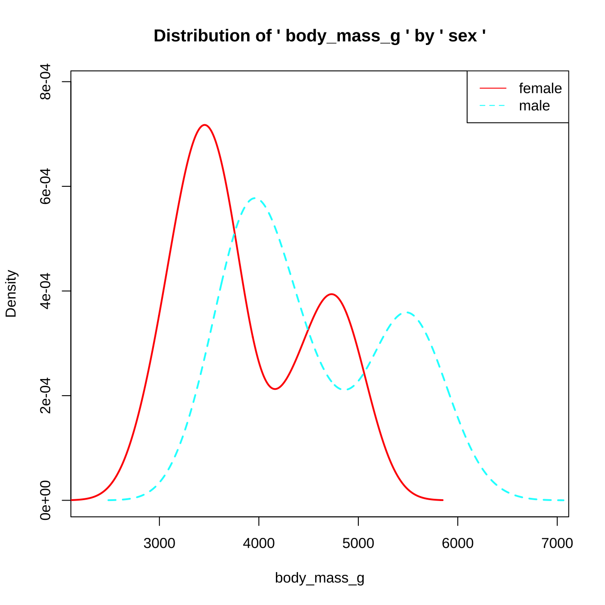

3.22 TIL20220322
3.22.1 비모수 검정
##
## The downloaded binary packages are in
## /var/folders/24/8k48jl6d249_n_qfxwsl6xvm0000gn/T//RtmpEO5g0e/downloaded_packagesif(!require(palmerpenguins)) { install.packages("palmerpenguins"); library(palmerpenguins); }
data <- penguins
densityplot(body_mass_g ~ sex, data = data)
- 정규성 검정
##
## Shapiro-Wilk normality test
##
## data: data$body_mass_g
## W = 0.95921, p-value = 3.679e-08- Wilcoxon Rank Sum Test
##
## Wilcoxon rank sum test with continuity correction
##
## data: body_mass_g by sex
## W = 6874.5, p-value = 1.813e-15
## alternative hypothesis: true location shift is not equal to 0- Kruskal-Wallis Rank Sun Test
##
## Kruskal-Wallis rank sum test
##
## data: body_mass_g by species
## Kruskal-Wallis chi-squared = 217.6, df = 2, p-value < 2.2e-16- 다중비교 mctp in nparcomp package
##
## The downloaded binary packages are in
## /var/folders/24/8k48jl6d249_n_qfxwsl6xvm0000gn/T//RtmpEO5g0e/downloaded_packages##
## #----------------Nonparametric Multiple Comparisons for relative effects---------------#
##
## - Alternative Hypothesis: True differences of relative effects are not equal to 0
## - Estimation Method: Global Pseudo Ranks
## - Type of Contrast : Tukey
## - Confidence Level: 95 %
## - Method = Fisher with 143 DF
##
## #--------------------------------------------------------------------------------------#
## ## $Data.Info
## Sample Size Effect Lower Upper
## 1 Adelie 151 0.3306848 0.3079187 0.3542725
## 2 Chinstrap 68 0.3483905 0.3252036 0.3723185
## 3 Gentoo 123 0.8209247 0.8149834 0.8267158
##
## $Contrast
## 1 2 3
## 2 - 1 -1 1 0
## 3 - 1 -1 0 1
## 3 - 2 0 -1 1
##
## $Analysis
## Estimator Lower Upper Statistic p.Value
## 2 - 1 0.018 -0.044 0.080 0.628 0.7107447
## 3 - 1 0.490 0.457 0.522 27.622 0.0000000
## 3 - 2 0.473 0.438 0.506 25.876 0.0000000
##
## $Analysis.Inf
## Estimator Lower Upper Statistic p.Value
## 2 - 1 0.0177057 -0.04437702 0.0796522 0.627583 0.7107447
## 3 - 1 0.4902399 0.45709074 0.5220290 27.621509 0.0000000
## 3 - 2 0.4725342 0.43792131 0.5057482 25.875668 0.0000000
##
## $Overall
## Quantile p.Value
## 1 2.201406 0
##
## $input
## $input$formula
## body_mass_g ~ species
##
## $input$data
## # A tibble: 344 × 8
## species island bill_length_mm bill_depth_mm flipper_length_mm body_mass_g
## <fct> <fct> <dbl> <dbl> <int> <int>
## 1 Adelie Torgersen 39.1 18.7 181 3750
## 2 Adelie Torgersen 39.5 17.4 186 3800
## 3 Adelie Torgersen 40.3 18 195 3250
## 4 Adelie Torgersen NA NA NA NA
## 5 Adelie Torgersen 36.7 19.3 193 3450
## 6 Adelie Torgersen 39.3 20.6 190 3650
## 7 Adelie Torgersen 38.9 17.8 181 3625
## 8 Adelie Torgersen 39.2 19.6 195 4675
## 9 Adelie Torgersen 34.1 18.1 193 3475
## 10 Adelie Torgersen 42 20.2 190 4250
## # … with 334 more rows, and 2 more variables: sex <fct>, year <int>
##
## $input$type
## [1] "Tukey"
##
## $input$conf.level
## [1] 0.95
##
## $input$alternative
## [1] "two.sided"
##
## $input$asy.method
## [1] "fisher"
##
## $input$plot.simci
## [1] FALSE
##
## $input$control
## NULL
##
## $input$info
## [1] TRUE
##
## $input$rounds
## [1] 3
##
## $input$contrast.matrix
## NULL
##
## $input$correlation
## [1] FALSE
##
## $input$effect
## [1] "unweighted"
##
## $input$const
## [1] 0.5875441
##
##
## $text.Output
## [1] "True differences of relative effects are not equal to 0"
##
## $text.output.W
## [1] "Global Pseudo Ranks"
##
## $connames
## [1] "2 - 1" "3 - 1" "3 - 2"
##
## $AsyMethod
## [1] "Fisher with 143 DF"
##
## attr(,"class")
## [1] "mctp"3.22.2 ANOVA in R
3.22.2.1 ANOVA 가정 점검
if(!require(dplyr)) { install.packages("dplyr"); library(dplyr); }
if(!require(palmerpenguins)) { install.packages("palmerpenguins"); library(palmerpenguins); }
if(!require(ggplot2)) { install.packages("ggplot2"); library(ggplot2); }
data <- penguins %>% select(body_mass_g, species, sex) %>% na.omit()
ggplot(data, aes(species, body_mass_g, col=sex)) +
geom_boxplot() +
theme_bw()펭귄 종에 따른 몸무게의 유의한 차이가 있는지 ANOVA로 분석한다. 신뢰성 있는 결과 도출을 위해 아래의 가정을 확인한다.
- 변수 유형 독립변수 범주형, 종속변수 연속형
## tibble [333 × 3] (S3: tbl_df/tbl/data.frame)
## $ body_mass_g: int [1:333] 3750 3800 3250 3450 3650 3625 4675 3200 3800 4400 ...
## $ species : Factor w/ 3 levels "Adelie","Chinstrap",..: 1 1 1 1 1 1 1 1 1 1 ...
## $ sex : Factor w/ 2 levels "female","male": 2 1 1 1 2 1 2 1 2 2 ...
## - attr(*, "na.action")= 'omit' Named int [1:11] 4 9 10 11 12 48 179 219 257 269 ...
## ..- attr(*, "names")= chr [1:11] "4" "9" "10" "11" ...- 독립성, durbinWatsonTest() 함수를 통해 통계적으로 검정
##
## The downloaded binary packages are in
## /var/folders/24/8k48jl6d249_n_qfxwsl6xvm0000gn/T//RtmpEO5g0e/downloaded_packages## lag Autocorrelation D-W Statistic p-value
## 1 -0.4946035 2.989155 0
## Alternative hypothesis: rho != 0정규성
- Shapiro-Wilk normality test
- Kolmogorov-Smirnov test
- QQPlot, Histogram
## ## Shapiro-Wilk normality test ## ## data: data.aov$residuals ## W = 0.9922, p-value = 0.07835
##
## Asymptotic two-sample Kolmogorov-Smirnov test
##
## data: data$species and data$body_mass_g
## D = 1, p-value < 2.2e-16
## alternative hypothesis: two-sided## [1] 164 186- 등분산성
- Levene’s test
- Bartlette test
- Boxplot
## Levene's Test for Homogeneity of Variance (center = median)
## Df F value Pr(>F)
## group 2 5.1349 0.006367 **
## 330
## ---
## Signif. codes: 0 '***' 0.001 '**' 0.01 '*' 0.05 '.' 0.1 ' ' 1## Levene's Test for Homogeneity of Variance (center = median)
## Df F value Pr(>F)
## group 5 1.3908 0.2272
## 327##
## Bartlett test of homogeneity of variances
##
## data: body_mass_g by species
## Bartlett's K-squared = 5.692, df = 2, p-value = 0.05808##
## Bartlett test of homogeneity of variances
##
## data: body_mass_g by interaction(species, sex)
## Bartlett's K-squared = 7.6908, df = 5, p-value = 0.1741- 이상치
- Boxplot, outlierTest()
## No Studentized residuals with Bonferroni p < 0.05
## Largest |rstudent|:
## rstudent unadjusted p-value Bonferroni p
## 164 2.655717 0.0082993 NA## [1] 2700 6300## # A tibble: 1 × 3
## body_mass_g species sex
## <int> <fct> <fct>
## 1 6300 Gentoo male3.22.2.2 ANOVA
- oneway.test(…, var.equal=)
##
## One-way analysis of means (not assuming equal variances)
##
## data: body_mass_g and species
## F = 316.5, num df = 2.00, denom df = 187.68, p-value < 2.2e-16- aov()
## Df Sum Sq Mean Sq F value Pr(>F)
## species 2 145190219 72595110 341.9 <2e-16 ***
## Residuals 330 70069447 212332
## ---
## Signif. codes: 0 '***' 0.001 '**' 0.01 '*' 0.05 '.' 0.1 ' ' 1- Kruskal-Wallis test (정규성 불만족 시)
##
## Kruskal-Wallis rank sum test
##
## data: body_mass_g by species
## Kruskal-Wallis chi-squared = 212.09, df = 2, p-value < 2.2e-163.22.2.3 사후검정
- Tukey HSD
## Tukey multiple comparisons of means
## 95% family-wise confidence level
##
## Fit: aov(formula = body_mass_g ~ species, data = data)
##
## $species
## diff lwr upr p adj
## Chinstrap-Adelie 26.92385 -132.3528 186.2005 0.916431
## Gentoo-Adelie 1386.27259 1252.2897 1520.2554 0.000000
## Gentoo-Chinstrap 1359.34874 1194.4304 1524.2671 0.000000if(!require(multcomp)) { install.packages("multcomp"); library(multcomp); }
tukey.result <- glht(aov.result,
linfct = mcp(species = "Tukey")); tukey.result##
## General Linear Hypotheses
##
## Multiple Comparisons of Means: Tukey Contrasts
##
##
## Linear Hypotheses:
## Estimate
## Chinstrap - Adelie == 0 26.92
## Gentoo - Adelie == 0 1386.27
## Gentoo - Chinstrap == 0 1359.35- Dunnett
if(!require(multcomp)) { install.packages("multcomp"); library(multcomp); }
dunnett.result <- glht(aov.result,
linfct = mcp(species = "Dunnett")); dunnett.result##
## General Linear Hypotheses
##
## Multiple Comparisons of Means: Dunnett Contrasts
##
##
## Linear Hypotheses:
## Estimate
## Chinstrap - Adelie == 0 26.92
## Gentoo - Adelie == 0 1386.27- Bonferroni correction
##
## Pairwise comparisons using t tests with pooled SD
##
## data: data$body_mass_g and data$species
##
## Adelie Chinstrap
## Chinstrap 1 -
## Gentoo <2e-16 <2e-16
##
## P value adjustment method: bonferroni